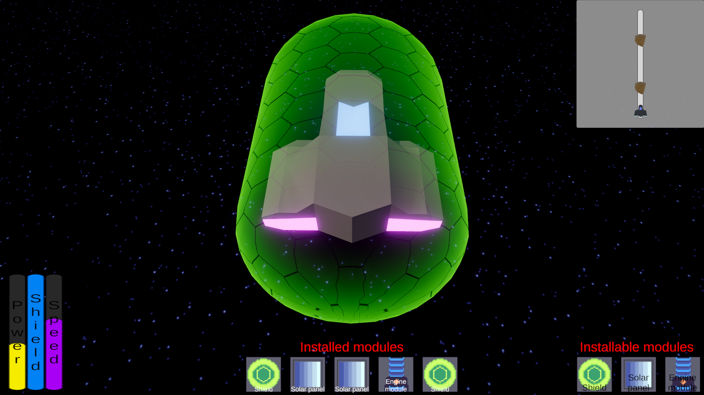

Game / Ludum Dare 54
Vessel Run
Balance engines and shields while hauling cargo through asteroid fields.

About the game
Your mission is to transport cargo through multiple asteroid fields, from one unremarkable part of space to another, while carefully balancing your ship’s power between its engines and shields. Unfortunately, after attending the Malcolm Reynolds School of Captaining, you bought a ship with room for only a few essential modules. Decide whether to reach your destination safely or risk slowing down and being dismantled by your employer.